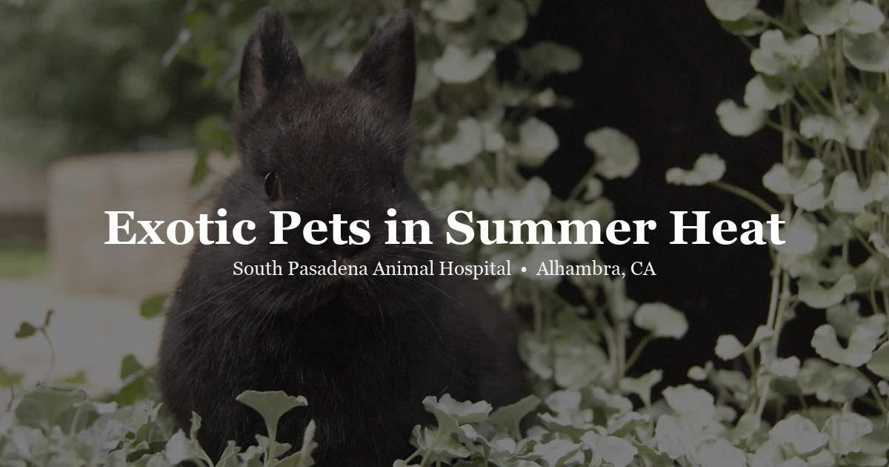

April 2, 2026 · 8 min read
☀️ Keeping Exotic Pets Safe in Southern California Heat

Every summer, we get a wave of emergency calls that all sound the same: "My rabbit is lying on its side and won't move," or "My guinea pig is breathing really fast and feels hot." And almost every time, it's heat-related. Completely preventable, but it catches people off guard.
Here's the thing about the San Gabriel Valley — it gets brutally hot. We're talking 100, 105, sometimes 110°F for days on end. And a lot of folks in Alhambra, Pasadena, Monterey Park — they're in older apartments or houses where the AC either doesn't work great or doesn't exist. That's a recipe for disaster if you've got an exotic pet.
Dogs and cats handle heat better than most people think. Exotic pets? Not even close. Rabbits, guinea pigs, birds, even reptiles — they've got very little ability to regulate their own body temperature when the ambient temp spikes. So let's go through what you actually need to know before this summer hits.
Rabbits: The Most Heat-Sensitive Pet We See
This is the big one. If you own a rabbit and you take one thing away from this article, let it be this: rabbits cannot handle heat. Period. They can't pant effectively. They can't sweat. Their only real cooling mechanism is blood flow through their ears, and once the air temp gets above about 80°F, even that stops working well.
We start seeing rabbit heat stroke cases every year around late June, and it picks up from there. One of the most common scenarios? Owner leaves for work in the morning when it's 75 out, figures the rabbit will be fine. By 2 PM the apartment is 90+ degrees inside and the rabbit is in serious trouble.
Things that actually help:
- Frozen water bottles — fill a couple of 2-liter bottles, freeze them, wrap in a towel, and put them in the enclosure. Your rabbit will lean against them. Rotate them out as they thaw.
- Ceramic or marble tiles — stick them in the fridge or freezer, then lay them flat in the pen. Rabbits will sprawl right on them.
- A fan blowing across the space — not directly on the rabbit, but moving the air around helps. It's not a substitute for AC, though.
- Never, ever put a rabbit in direct sunlight. Not by a window, not in an outdoor hutch without full shade. Just don't.
If you're in an apartment without good air conditioning — and we know that's a lot of apartments around here — honestly consider whether you can keep a room below 78°F on the worst days. If you can't, a portable AC unit is not optional. It's a necessity for keeping a rabbit safe through a San Gabriel Valley summer.
Guinea Pigs: Just as Vulnerable, Often Overlooked
Guinea pigs have basically the same problem as rabbits. They can't cool themselves down. They're small, they've got thick fur, and once the room gets above 80°F they start struggling. But for some reason, guinea pig owners tend to underestimate this more than rabbit owners do. Maybe because guinea pigs are so easygoing that people assume they're tough. They're not.
Signs your guinea pig is overheating:
- Panting or rapid breathing — guinea pigs normally don't breathe that visibly, so if you can see it, something's wrong
- Drooling
- Lying flat and stretched out, not moving much
- Feeling warm to the touch, especially the ears
- Unresponsive or very sluggish when you pick them up
Same rules as rabbits: frozen water bottles, ceramic tiles, keep the room cool, no direct sun. Guinea pigs also do worse with humidity on top of heat, which isn't usually a huge issue in the SGV but can happen during monsoon season in late summer.
One mistake we see constantly — people put the guinea pig cage right next to a window because they think the natural light is good for them. In summer, that window turns the cage into a greenhouse by afternoon. Move it to the coolest part of the room.
Birds: Harder to Read, Easy to Miss
Birds are tricky because their signs of heat stress look different from mammals. A lot of bird owners don't realize their bird is in trouble until it's pretty far along.
What overheating looks like in a bird:
- Panting with the beak open and wings held away from the body — they're trying to increase air flow to cool down
- Sitting on the cage floor instead of perching — this is a bad sign in general, but in hot weather it's often heat-related
- Fluffed feathers — counterintuitive, but sometimes they fluff up when stressed
- Lethargy, not vocalizing like normal
Biggest mistake we see: cage placement near a SoCal window. Those west-facing windows especially — by late afternoon, the sun is blasting directly through the glass and the cage is basically sitting in an oven. Even with a curtain, the heat builds up. Keep cages away from windows in summer, full stop.
Also worth noting — birds are very sensitive to fumes. If you're running a portable AC or a fan, make sure it's not a Teflon-coated space heater (not that you'd be using one in summer, but we've seen some creative "cooling" setups). Stick with a normal fan or a regular AC unit.
Reptiles: Yes, They Can Overheat Too
This one surprises people. "But they love heat, right?" Sure, to a point. Bearded dragons, leopard geckos, ball pythons — they all have a preferred temperature range, and when the room temperature spikes above that range, they can't escape it in a glass enclosure.
Here's the scenario we see: the room is already 85 or 90°F because the AC isn't keeping up. The basking lamp is still running on a timer. Now the hot side of the enclosure is 120+ and the "cool side" is 95. The animal has nowhere to thermoregulate. That's when you get problems.
What to do:
- Use a thermometer. Not one of those stick-on strip thermometers — a digital probe or temp gun. Actually check the temps on hot days. Don't guess.
- Turn off the basking lamp if the room is already at or above the basking temp. This sounds weird, but if it's 95°F in the room, your beardie doesn't need a 105°F basking spot on top of that.
- Make sure there's a genuine cool zone — a hide on the cool side that's actually at a lower temp. If the whole enclosure is the same temperature, your reptile can't cool down.
- Snakes in particular can be vulnerable because a lot of people keep them in plastic tubs. Those tubs heat up fast in a hot room.
We wrote a whole post about signs your bearded dragon needs a vet — if your beardie is gaping with a dark beard and seems restless during a heat wave, don't just chalk it up to the weather. Get them checked.
Transport: This Is Where Most Emergencies Actually Start
Honestly? If we had to pick the single biggest heat-related danger for exotic pets in Southern California, it's the car. It's not even close.
Everyone knows you shouldn't leave a dog in a parked car. But people don't always apply the same logic to their bird, rabbit, or reptile. A parked car in Alhambra in July hits 120°F inside within about 15 minutes. Even with the windows cracked. Even in the shade. That's lethal for basically every exotic animal.
And it's not just leaving them in the car. The drive itself matters. Here's what we tell people when they're bringing their exotic pet in for a summer appointment:
- Pre-cool the car. Run the AC for at least 5–10 minutes before putting your pet in. A hot car that's "cooling down" is still dangerously warm for the first several minutes.
- Bring them in a carrier, not a cardboard box. Cardboard insulates heat. A well-ventilated carrier with a frozen water bottle tucked alongside it works much better.
- Drive straight there and back. Don't run errands with your guinea pig in the car. Don't stop at the grocery store "real quick." The car heats up in minutes once you turn it off.
- Morning appointments are your friend. If you can, book for early morning before it gets hot. We do this for our own pets, too.
Outdoor Enclosures: Tortoises, Rabbits, and the Concrete Problem
A lot of our tortoise owners keep them outdoors, which is great most of the year. SoCal is honestly one of the best places to keep a tortoise outside. But in summer you have to pay attention.
The number one thing people miss: concrete and pavement radiate heat. Your patio might be shaded, but if it's concrete, it's still absorbing heat all day and radiating it back up. A tortoise walking on a concrete patio at 4 PM is basically walking on a hot plate. Grass, dirt, or mulch is dramatically cooler.
For outdoor rabbit hutches — same deal, plus a few more concerns:
- Shade that exists at 8 AM may not exist at 2 PM. Track where the sun actually hits the hutch throughout the day.
- Wooden hutches trap heat. Wire sides with a shaded tarp are better for airflow in summer.
- Always, always have fresh water available. Multiple water sources. Check them twice a day because they get warm fast.
- Bring them inside if it's going to be over 95°F. Seriously. A few hours indoors during the worst heat is better than hoping the shade holds up.
Signs of a Heat Emergency — Species by Species
Knowing what to look for is half the battle. Here's a quick rundown:
Rabbits:
- Red, hot ears
- Rapid or labored breathing
- Wetness around the nose
- Lying stretched out and unresponsive
- Seizures or head tilt (this is advanced — get to a vet immediately)
Guinea pigs:
- Panting, drooling
- Lying flat and limp
- Warm to the touch
- Not responding when you touch them
Birds:
- Open-mouth breathing with wings spread
- Sitting on cage bottom
- Eyes partially closed, fluffed up
- Falling off the perch
Reptiles:
- Excessive gaping (not just basking behavior)
- Frantic activity — trying to escape the enclosure
- Limp, unresponsive
- Unusual coloring (darker than normal in some species)
What to Do If Your Pet Is Overheating
First: don't panic, but don't waste time either. Here's the first-aid version before you get to us:
- Move them to a cool area immediately. Air-conditioned room, away from windows.
- For rabbits and guinea pigs: dampen their ears with cool (NOT cold or ice) water. You can also mist their fur lightly. Do not dunk them in cold water — the shock of ice-cold water can cause cardiac arrest in a small mammal that's already in distress.
- For birds: mist them lightly with room-temperature water. Offer water to drink. Get air moving with a fan if you have one.
- For reptiles: move them to a cooler area, offer a shallow dish of room-temp water, turn off all heat sources in the enclosure.
- Offer water to anyone who will drink, but don't force it.
The goal is gradual cooling. This is really important. Rapid cooling — ice baths, ice packs directly on the body, cold water — can actually make things worse by causing the blood vessels to constrict, which traps heat internally. Cool and steady is what you want.
When to Come In Immediately
Some heat situations you can manage at home by fixing the environment and cooling them down gradually. But call us or come in right away if:
- Your pet is unresponsive or barely responsive
- There are seizures, tremors, or a head tilt
- Breathing is labored and doesn't improve after 10–15 minutes of cooling
- Your rabbit's body temp (rectal) is above 104°F
- Your bird fell off its perch or can't stand
- Your pet was left in a hot car, even briefly
- You started cooling them down but they're not improving
Don't try to wait it out overnight. Heat damage to organs can progress even after the body temperature comes back down. If you're unsure whether it's serious enough, just call us at (626) 441-1314 and we can talk you through it.
It All Comes Down to Prevention
Look — heat emergencies are one of the most preventable things we deal with. The pets that end up in trouble are almost always in situations where the owner didn't realize how hot it was getting, or figured their pet would be fine for a few hours. And most of the time they would've been fine with just a little bit of planning.
Know your home's hot spots. Know what time of day your apartment heats up. Have a plan for the days when it's going to be 100+. Check your pet's space before you leave for work. And if your AC dies in July — which happens, this is SoCal — have a backup plan. Even bringing your rabbit into the bathroom with a fan and some frozen water bottles for an afternoon is better than nothing.
Your pets are counting on you to think about this stuff before it becomes an emergency. A little prep goes a long way.